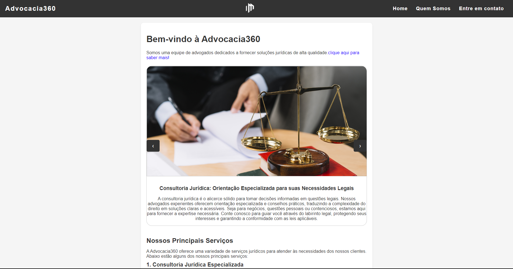

Sobre Mim
Meu nome é Leonardo e trabalho na área de programação web há um ano. Aqui vou compartilhar alguns dos meus principais projetos realizados durante esse tempo. Meu foco principal é desenvolver sites usando HTML, CSS e JavaScript. Acredito que essa combinação de linguagens permite não apenas criar páginas visualmente atraentes, mas também proporcionar uma experiência intuitiva e envolvente para o usuário.
Ao longo deste ano, tive a oportunidade de trabalhar em uma variedade de projetos desafiadores, desde sites institucionais até aplicações web interativas. Cada projeto foi uma chance para aprender e aprimorar minhas habilidades, o que me permitiu desenvolver soluções cada vez mais refinadas e eficazes.
Além das habilidades técnicas, valorizo muito a comunicação e o trabalho em equipe. Acredito que a colaboração seja essencial para o sucesso de qualquer projeto, e estou sempre aberto a novas ideias e perspectivas. Sou comprometido, organizado e busco sempre superar as expectativas dos clientes, garantindo que cada projeto seja entregue dentro do prazo estabelecido com alta qualidade.
Estou empolgado para compartilhar meus projetos e mostrar como minha paixão pela programação web se reflete em trabalhos concretos com impacto. Espero que você encontre exemplos inspiradores aqui sobre o que pode ser alcançado por meio da combinação certa de habilidades técnicas e criatividade.
Estou à disposição para quaisquer dúvidas ou oportunidades de colaboração. Vamos juntos criar experiências incríveis na web!
Site para Escritórios de Advocacia
Dê uma olhada no projeto de web design que criei para um escritório de advocacia. Testemunhe minha habilidade em criar sites que combinam visuais com utilidade indispensável, resultando em um encontro perfeito. A vitrine resume como posso apresentar serviços de maneira eficaz, mostrando minhas habilidades na elaboração e desenvolvimento de páginas da web.

Site para Clima Mundial
Neste site que criei, é possível visualizar o clima em tempo real de diversos países ao redor do mundo. Desenvolvido utilizando HTML, CSS e, principalmente, Javascript, o projeto oferece uma interface intuitiva e de fácil navegação. Com uma ampla gama de funcionalidades, os usuários podem explorar informações precisas sobre condições climáticas atuais em diferentes regiões da Mundo..

Site para Hora Mundial
Já neste outro site que criei, é possível visualizar a hora em tempo real de diversos países ao redor do mundo. Desenvolvido em HTML, CSS e, usando principalmente, Javascript. Com uma ampla gama de funcionalidades, os usuários podem explorar informações precisas sobre o horario atual em diferentes regiões da Mundo.